Institución & Patrimonio Literario
Bienvenido a Raabta.
En Raabta, espacio de conexión entre las almas, no solo hallarás formación profesional para escritores, pinturas y obras de arte a la venta, y libros de autores del siglo XXI, sino también consultoría especializada en propiedad intelectual para proteger tus creaciones.
Raabta: el espacio donde la literatura y el arte conectan almas y trascienden en el tiempo.
Credenciales
-
Como gestor cultural, organicé por más de tres años la Feria del Libro Córdoba, el evento cultural más importante de la provincia. Con enfoque federal, sintonicé esta gran celebración con la Feria del Libro Joven y redes de lectura, transformando espacios tradicionales en canales masivos para autores consagrados y emergentes.
-
Como presidente en los periodos 2024 2026, lideré la modernización de la SADE Córdoba. Enfrenté los desafíos contemporáneos mediante la digitalización de procesos y la incorporación de jóvenes escritores a la asociación. Así, renovamos la representatividad y el dinamismo de nuestra histórica entidad, fortaleciendo el prestigio literario en toda la región.
-
Como director de galería de arte, expando mi visión curatorial uniendo la plástica y las letras. Me destaco especialmente como curador de la obra del pintor argentino Ricardo Mirolo.

Quién soy
Quién soy
Soy Marco Antonio Gómez y mi seudónimo de escritor es Marco Antonio Séptimo: novelista, ensayista y biógrafo, Presidente Honorario de la Sociedad Argentina de Escritores (SADE), Filial Córdoba. Creo que escribir es un acto de entrega y que toda obra encuentra su camino cuando alguien la acompaña con criterio y cariño. Por eso, además de escribir, trabajo como gestor cultural y consultor: ayudo a autores y creadores a proteger lo que hicieron, a darle forma y a llevarlo hasta quienes lo esperan. Cada libro, cada charla y cada encuentro nacen de una misma convicción: el arte nos une desde un lugar profundo.
- Córdoba, 1972
- Escribe desde 2018 · novela negra
- Licenciado en Seguridad · Universidad Nacional de Villa María
- Diplomado en Gerenciamiento en Seguridad Pública · Universidad Siglo XXI
- Diplomado en Turismo Religioso · Universidad Blas Pascal
- Diplomado en Propiedad Intelectual, Fashion Law e Industrias Creativas · Universidad FASTA
- Estudiante de Abogacía · Universidad Blas Pascal
Cursos y charlas
Cursos y charlas
Escribir se aprende acompañado. En mis cursos trabajo con autores en todas las etapas: quien tiene una idea y no sabe por dónde empezar, quien ya escribió y busca publicar, y quien quiere profesionalizar su camino. También brindo disertaciones y charlas para instituciones y espacios culturales, donde comparto mi experiencia en literatura, gestión cultural y propiedad intelectual. Cada encuentro busca lo mismo: que cada persona descubra su voz y se anime a darla a conocer. Son espacios para conversar, ordenar ideas y llevarse herramientas concretas para seguir escribiendo.
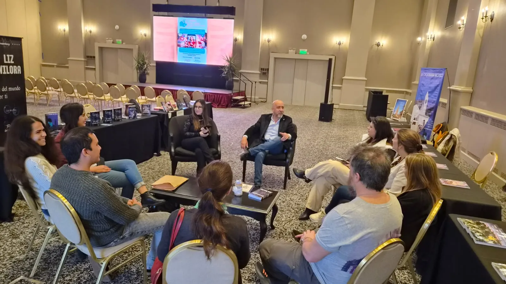
Más eventos

Primer módulo: Pitch y marca personal
Lugar: Concejo Deliberante.
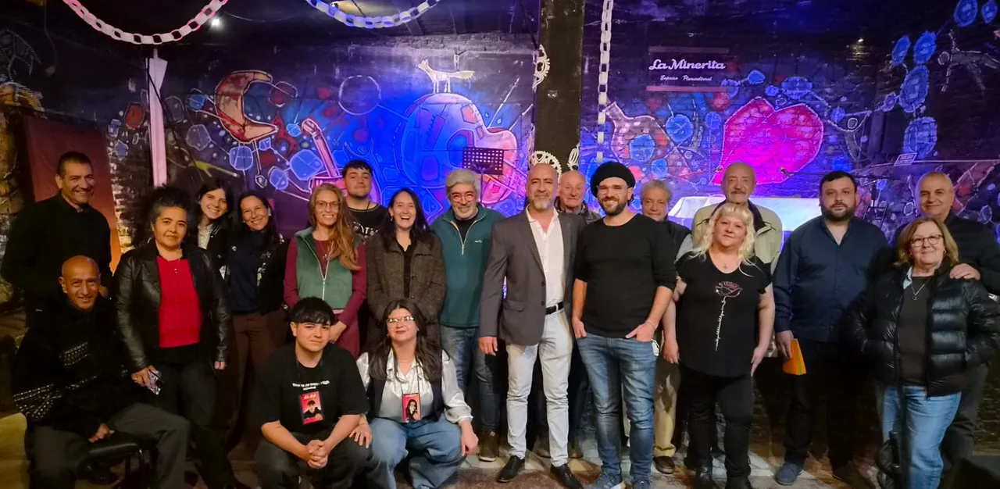
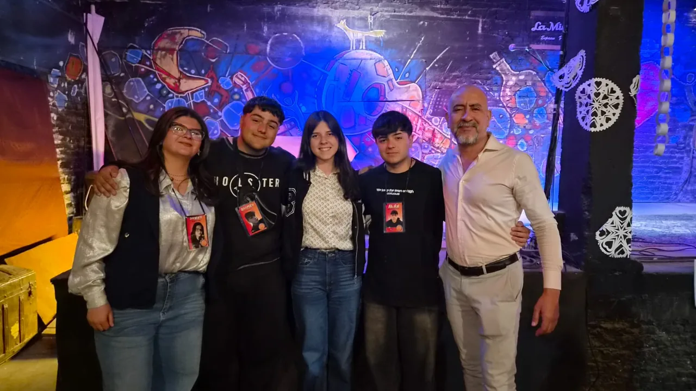
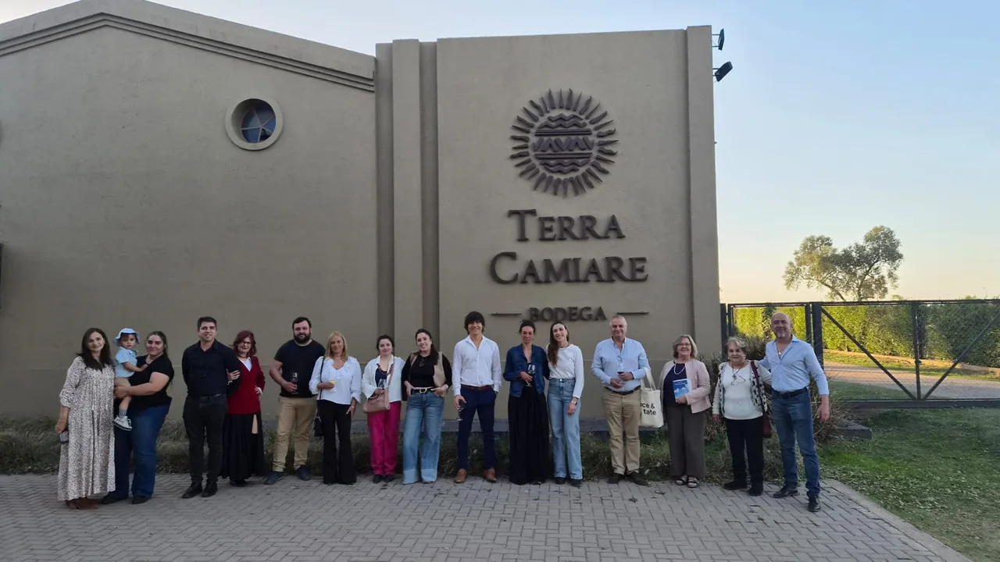
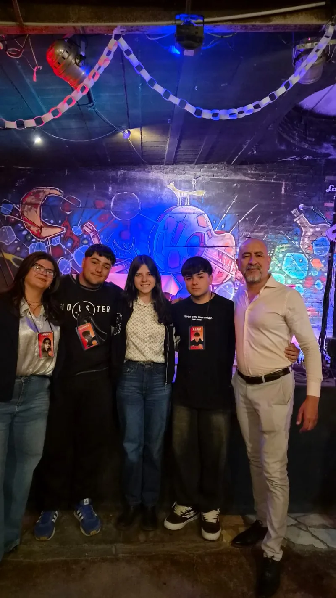
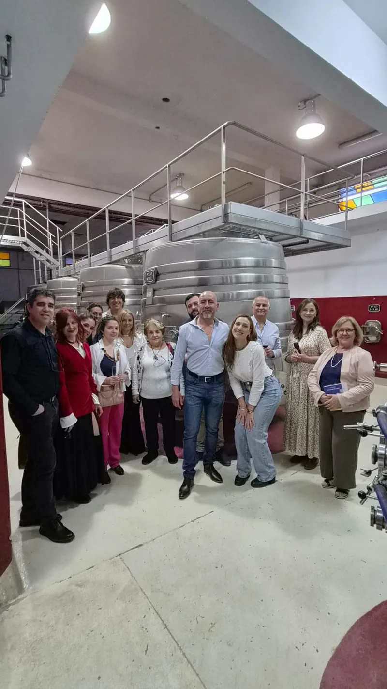
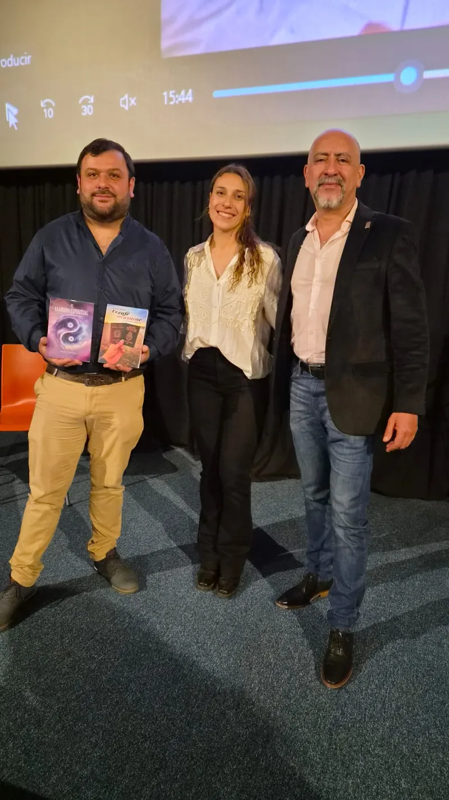
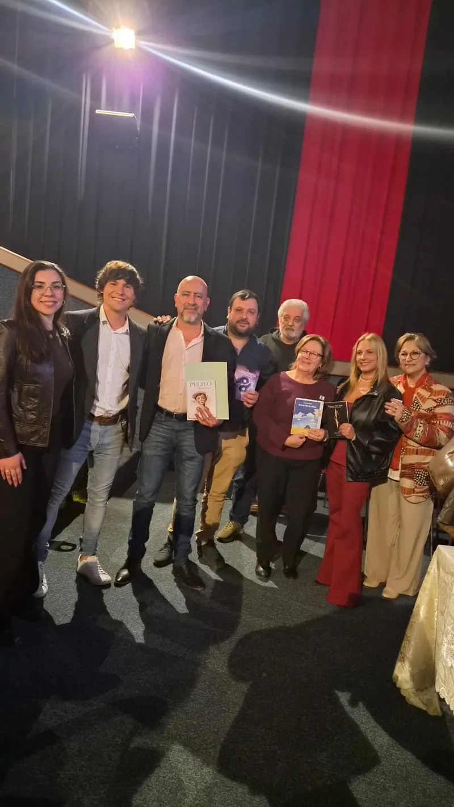
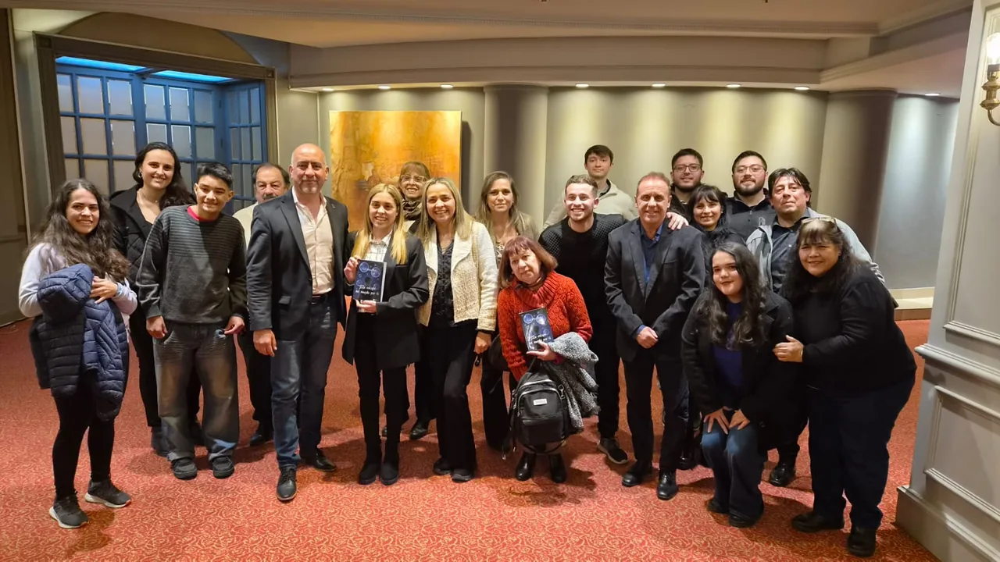
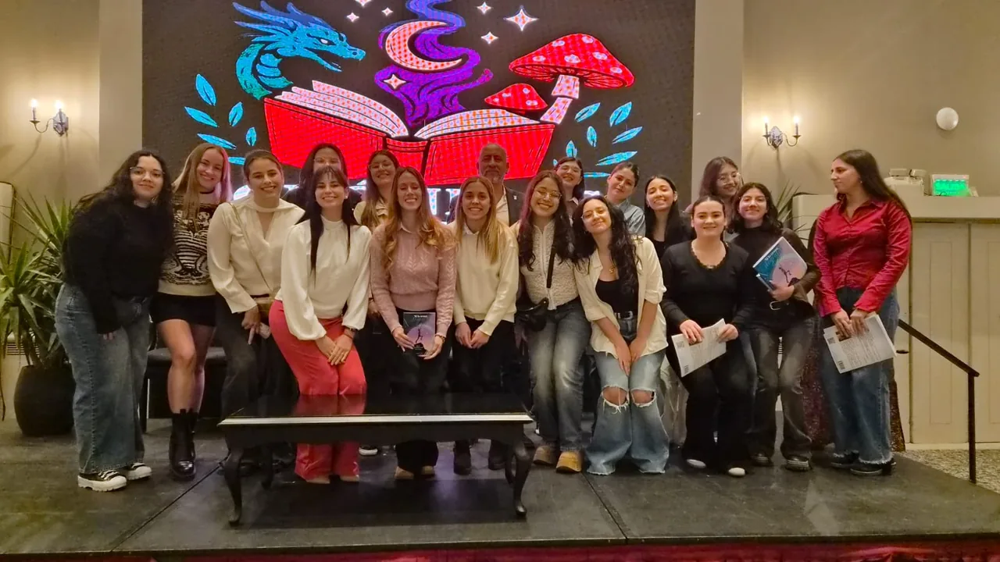
Consultá fechas y modalidades, o invitame a tu institución.
01
Empezar
Para quien tiene una idea y no sabe por dónde empezar.
Consultar fechas y modalidades02
Publicar
Para quien ya escribió y busca publicar.
Consultar fechas y modalidades03
Profesionalizar
Para quien quiere profesionalizar su camino.
Consultar fechas y modalidades04
Charlas y disertaciones
Para instituciones y espacios culturales: experiencia en literatura, gestión cultural y propiedad intelectual.
Invitame a tu institución
Libros
Libros
Cada libro es una invitación a entrar en otro mundo. Mis novelas, ensayos y biografías nacen de la investigación, la escucha y una pasión constante por contar historias que merecen ser recordadas.
Aquí vas a encontrar mi obra publicada, con sus portadas, sinopsis y formas de conseguirla. Si buscás un título para regalar, para estudiar o simplemente para dejarte llevar, este es el lugar para empezar. Cada ejemplar es también una manera de sostener la literatura y de acercarte a una voz que escribe desde el alma. Elegí tu próxima lectura y sumate, con calma, a este recorrido.
Obra destacada
La Comisaria Alonso
Por la justicia social y de género
En La Comisaria Alonso, la detective Verónica Alonso asume la seguridad de las serranías de Córdoba y busca revertir años de descrédito policial ante la creciente violencia urbana. La muerte de un líder sindical desafía su capacidad en un rol históricamente masculino. Una novela que reivindica a la mujer policía.
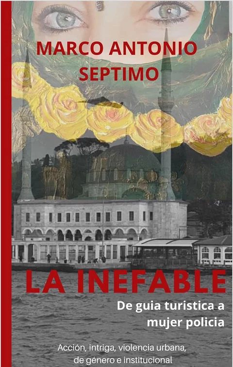
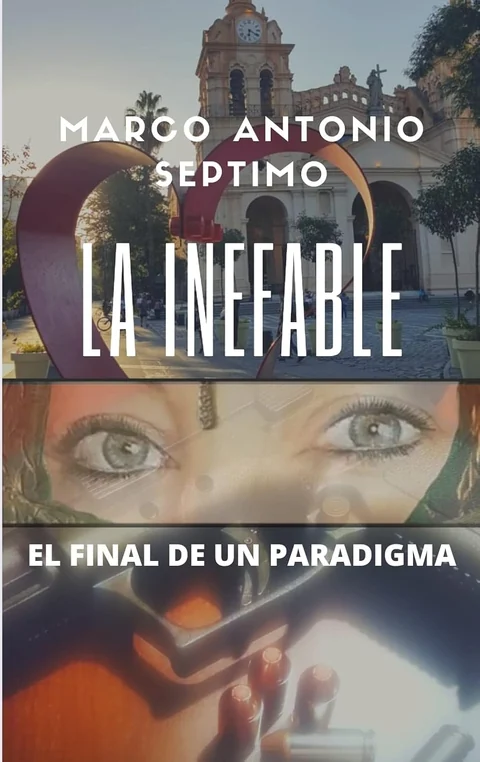
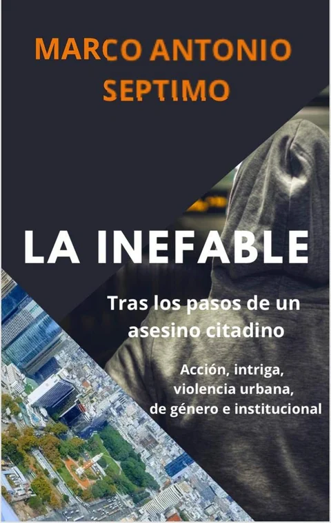
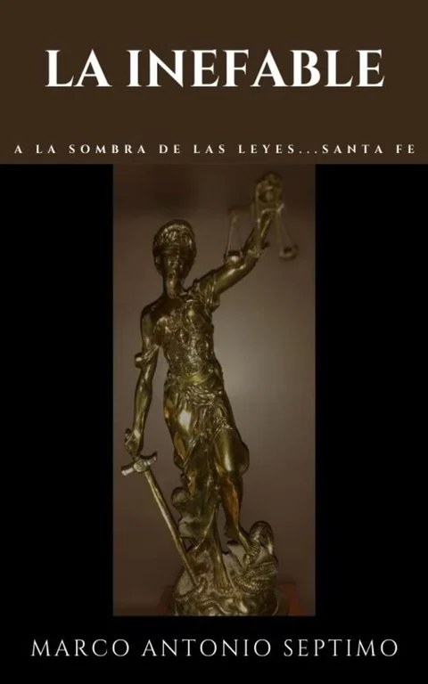
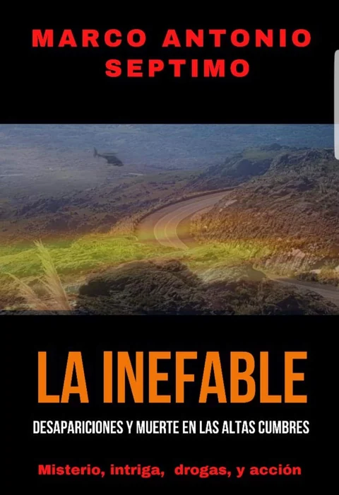
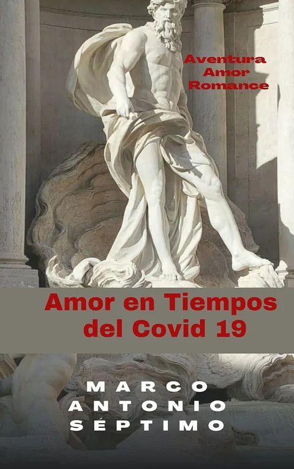
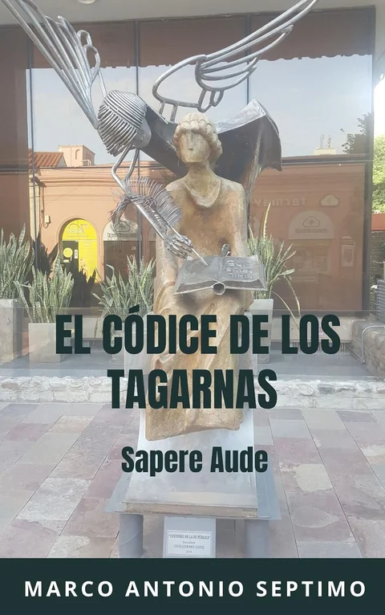
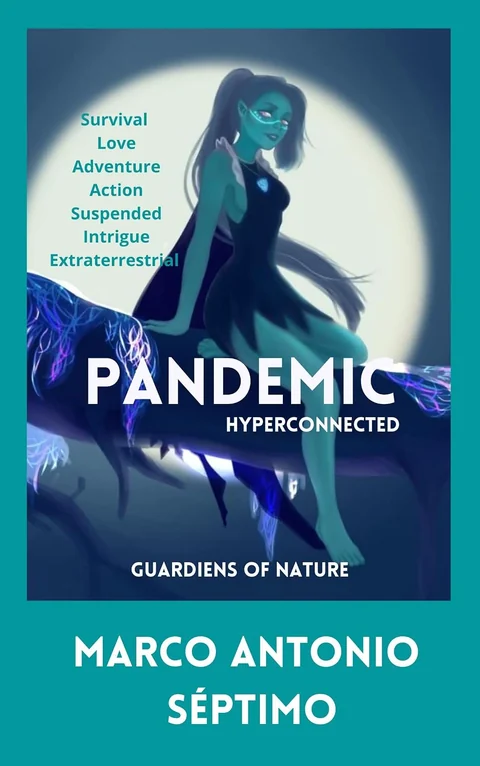
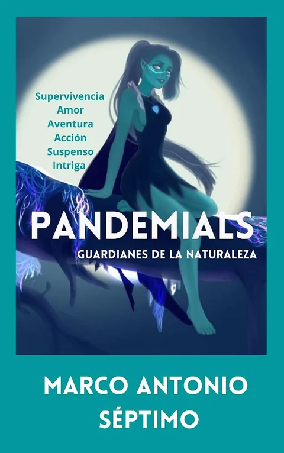
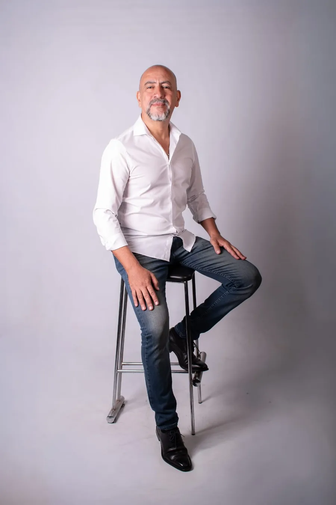
Servicios
¿Cómo podemos trabajar juntos?
Proteger una obra es tan importante como crearla. Como especialista en propiedad intelectual, te acompaño a registrar tus obras y resguardar tus derechos como autor, artista o creativo. Como consultor para escritores, te guío con dirección estratégica desde la idea inicial hasta el libro publicado. Y como gestor y curador cultural, te ayudo a desarrollar tu marca de autor, organizar eventos y articular proyectos artísticos con impacto. Son tres caminos para un mismo propósito: que tu obra esté protegida, llegue lejos y perdure en el tiempo. Cada proceso es a medida. Escribime y lo conversamos.
«El arte y la literatura se transforman en un legado protegido cuando logran conectar profundamente con los demás.»
01
Asesoría en Propiedad Intelectual
Registro de obras y resguardo de derechos para autores, artistas y creativos.
Consultar por propiedad intelectual02
Consultoría para Escritores
Acompañamiento integral y dirección estratégica para llevar tu obra desde la idea inicial hasta el libro publicado.
Consultar por consultoría03
Gestión & Curaduría Cultural
Desarrollo de marca de autor, organización de eventos y articulación de proyectos artísticos con impacto.
Consultar por gestión cultural
Rapta · Galería
Galería de arte
El arte dice lo que las palabras no alcanzan. Esta galería reúne obras que dialogan con la literatura y con las emociones que despiertan las historias. Cada pieza es una puerta a otra manera de mirar, y cada artista, un modo único de darle forma a lo invisible. Aquí, el color, la forma y la palabra se encuentran para encender ese lazo invisible que llamamos Rapta. Te invito a recorrerla con calma, a detenerte en lo que te conmueva y a descubrir las obras que forman parte de este espacio. Si alguna pieza te habla, escribime: me encantará contarte su historia.
[Título de la obra]
[Título de la obra]
[Título de la obra]
[Título de la obra]
[Título de la obra]
[Título de la obra]
Novedades
Novedades
Programas, notas de prensa y charlas, pasadas y próximas.
Curso «El autor como marca»
Liderazgo y oratoria para escritores. Primer módulo: Pitch y marca personal. Sábado de 10 a 12 hs, en el Concejo Deliberante.
Reservá tu lugarSunset literario en La Minerita
Encuentro literario en el espacio pluricultural de Unquillo: «Rubén Darío regresa a Córdoba tras 130 años».

«Pasión por las Letras» y entrevistas
Marco Antonio Séptimo conduce «Pasión por las Letras» en GDanse TV. [Sumar fecha, resumen y enlace del programa]

Feria del Libro Córdoba 2026
Presencia en la Feria del Libro de Córdoba. [Sumar lugar, fecha y resumen]

Terra Camiare Bodega
Encuentro grupal en la bodega. [Sumar de qué se trató, fecha y resumen]

«Me desnudo para vivir»
Encuentro con el público en torno a la novela. [Sumar autor, lugar, fecha y resumen]

Con autores y sus libros
«El llamado espiritual» y «Un café sin azúcar». [Sumar autores, lugar, fecha y resumen]
«Mi obra es una ficción anclada en una problemática real»
Nota publicada en El Milenio. [Sumar una línea de la nota]
Leer la notaContacto
Dá el primer paso hacia tu proyecto.
¿Tenés una obra en marcha, querés desarrollar tu marca de autor o necesitás proteger tus derechos de propiedad intelectual? Ponete en contacto directo para coordinar una consulta o suscribite para recibir contenidos y novedades exclusivas.